liqberry
What's so unique about LiQberry?
LiQberry berry paste is created using an innovative hydro-thermo-dynamic technology. This berry processing method has no analogues in the world.
The berries are crushed using pulsating pressure. During this process, the seeds are broken, allowing their contents - blueberry oil - to be released into the paste and absorbed by the body. When fresh berries are consumed in their natural form, the seeds pass through the digestive system without being absorbed.
The production process takes place without oxygen access and without the addition of preservatives, sugar, water, or artificial colorants, using low-temperature pasteurization.
The content of useful substances in blueberry seed
- Polyunsaturated fatty acids Omega-3-6-9
- Fat-soluble vitamins A and E
- Sterols
- Unique protein, amino acids
- Powerful biologically active substances
Available packaging:
Doypack
Jar
-
Blueberry Paste
-
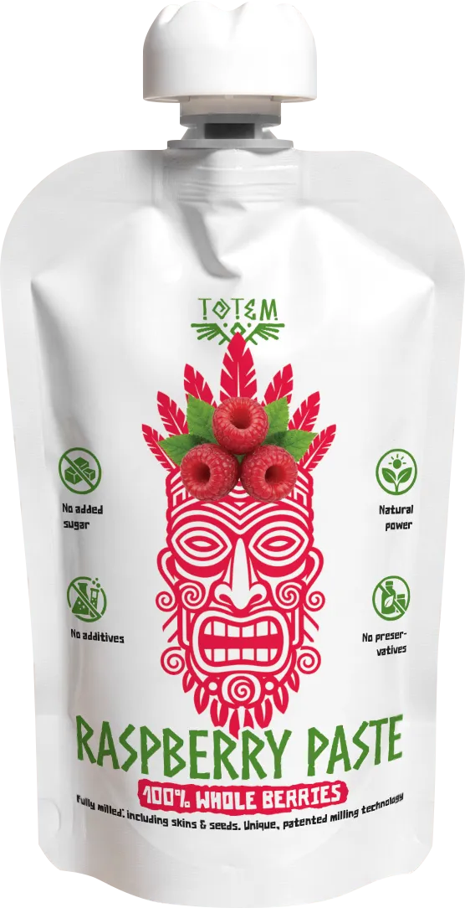 Raspberry Paste
-
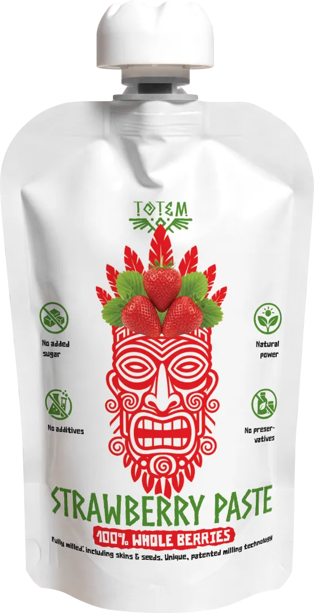 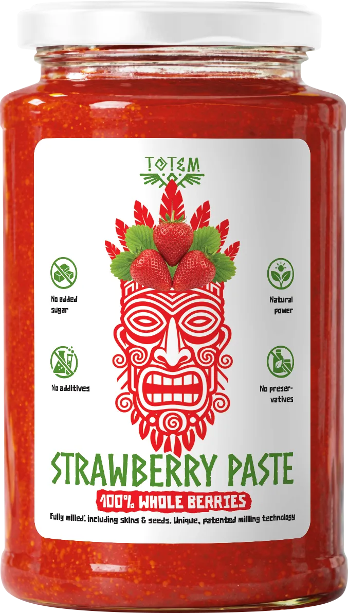 Strawberry Paste
-

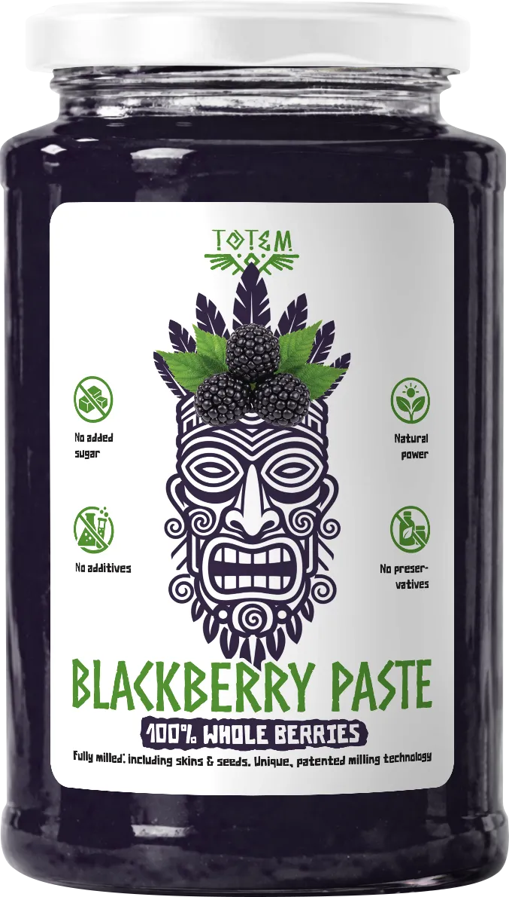 Blackberry Paste
-
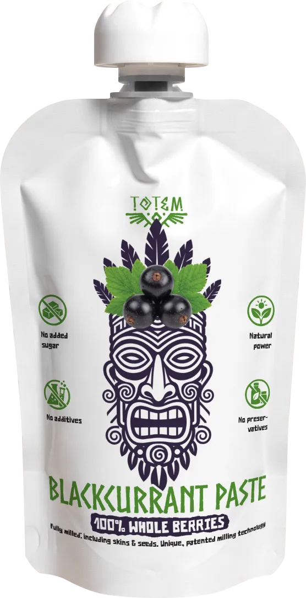 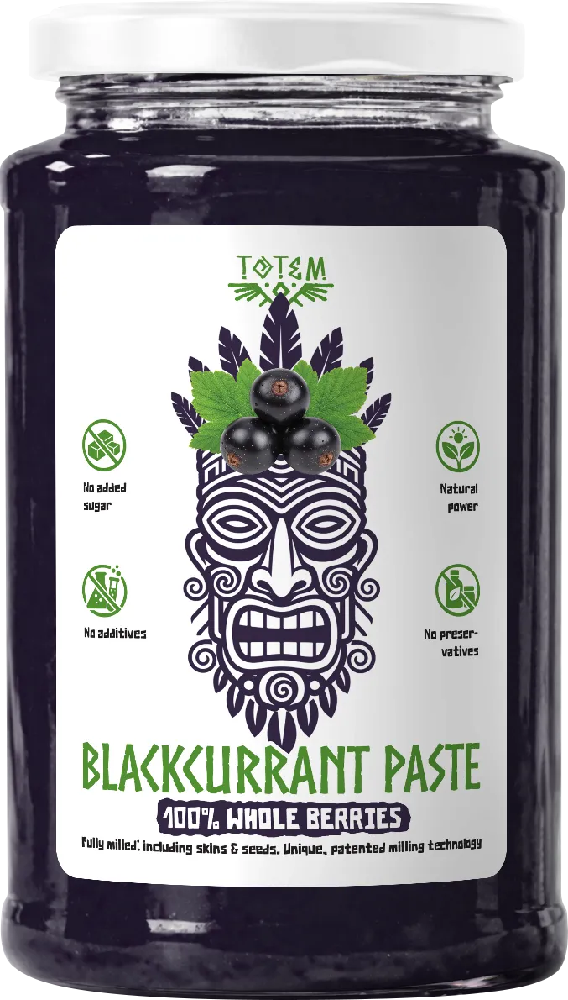 Blackcurrant Paste
-
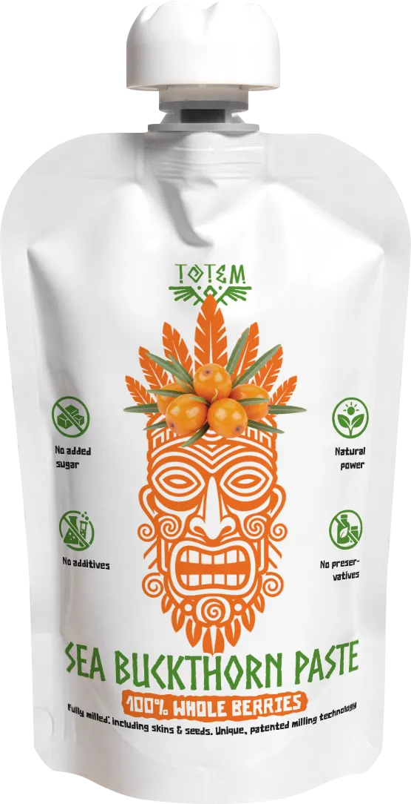 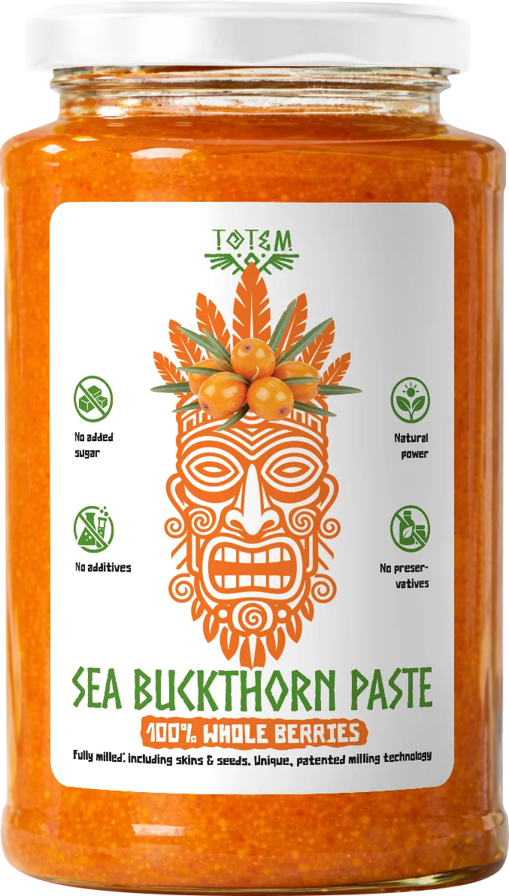 Sea Buckthorn Paste
-
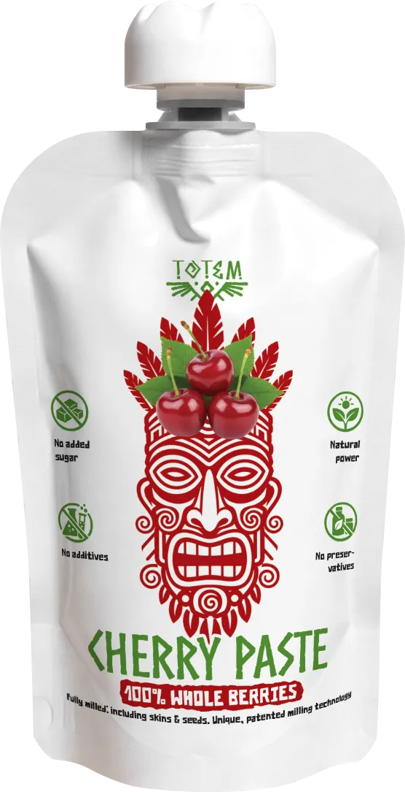 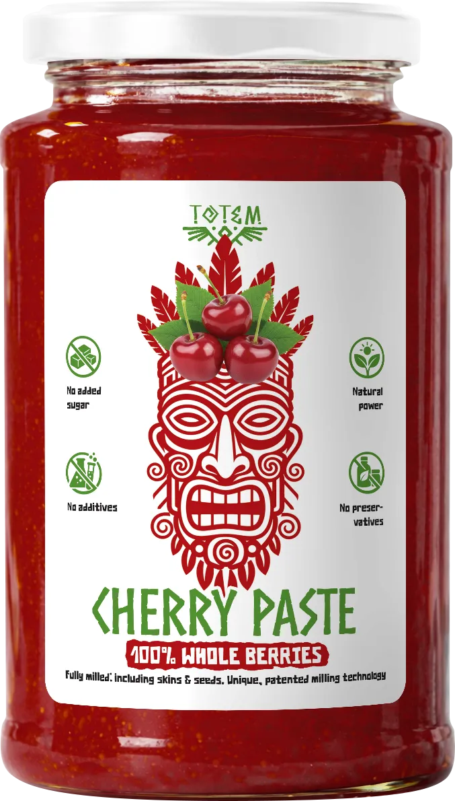 Cherry Paste
-
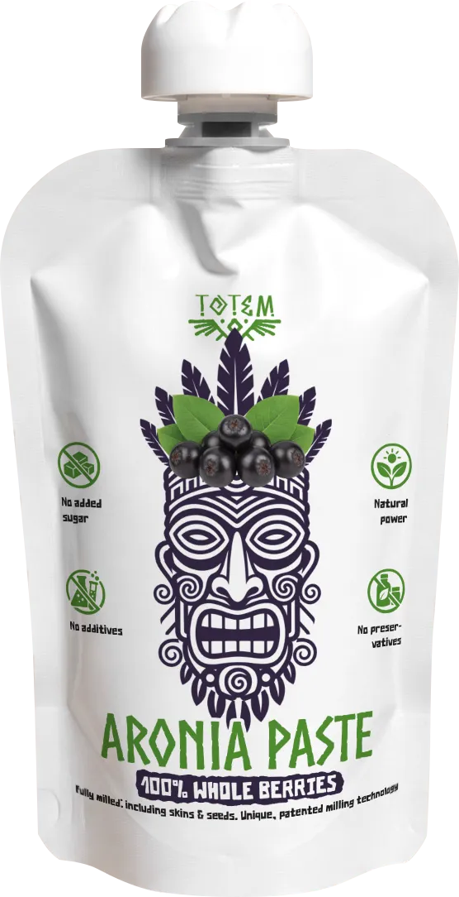 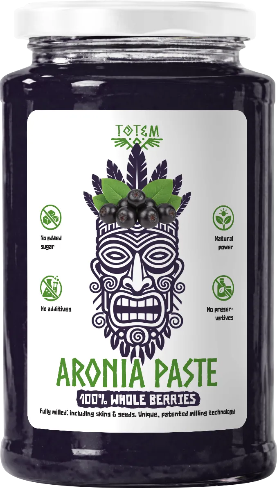 Aronia Paste
-
Liqberry
Blueberry Paste - Made from Whole Berries
Our blueberry paste is made from 100% whole blueberries and preserves the fruit’s natural composition in a concentrated form. Thanks to a gentle processing method, the valuable plant-based compounds naturally present in blueberries are retained.Blueberries are naturally rich in antioxidants, which are widely recognized for their role in protecting cells from oxidative stress. They also contain chlorogenic acid and anthocyanins, the natural pigments responsible for the berry’s deep color and an area of ongoing nutritional research.By milling the entire berry – including pulp, skins, and seeds, the paste:- retains the full natural berry profile,
- integrates easily into a balanced, health-conscious diet,
- contains no added sugar, no preservatives, and no artificial additives.
Our blueberry paste is appreciated by consumers who value clean ingredients, transparency, and natural food products. It can be enjoyed on its own or used in smoothies, yogurt, or creative culinary applications. -
Liqberry
Raspberry Paste - Made from Whole Berries
Our raspberry paste is produced from 100% whole raspberries, capturing the fruit’s distinctive aroma and natural plant compounds in a concentrated form. Gentle processing preserves the characteristic qualities of raspberries, which have long been valued as part of a balanced diet.Raspberries naturally contain plant acids, polyphenols, and aromatic compounds, which are widely studied in nutritional science. Thanks to their natural composition, raspberries are often included in mindful nutrition concepts and periods of increased physical or environmental demands.The raspberry paste:- retains the complete berry profile by processing pulp, skins, and seeds,
- integrates easily into a health-conscious daily diet,
- contains no added sugar, no preservatives, and no artificial additives.
Its rich, fruity flavor makes it suitable for enjoying on its own, in warm beverages, yogurt, smoothies, or creative culinary applications. -
Liqberry
Strawberry Paste - Made from Whole Berries
Our strawberry paste is produced from 100% whole strawberries, preserving the natural balance of fruit pulp, skins, and seeds. Strawberries are appreciated for their natural content of minerals, vitamins, and plant-based compounds, making them a popular element of a balanced and mindful diet.Strawberries naturally contain minerals such as iron, magnesium, potassium, calcium, and zinc, along with vitamin C, vitamin B5, and folate. They also provide antioxidant plant compounds, which may support the body’s natural defenses against oxidative stress as part of a healthy lifestyle.The strawberry paste:- retains the complete berry profile by processing the entire fruit,
- fits easily into a health-conscious daily routine,
- contains no added sugar, no preservatives, and no artificial additives.
Its fresh, fruity taste makes it ideal for enjoying on its own, in yogurt, smoothies, or as an ingredient in creative culinary applications. -
Liqberry
Blackberry Paste - Made from Whole Berries
Our blackberry paste is made from 100% whole blackberries, preserving the complete natural berry profile including pulp, skins, and seeds. Blackberries are valued for their content of vitamin E, polyphenols, and other plant-based compounds, making them a respected element of a balanced diet.Vitamin E helps protect cells from oxidative stress, while naturally occurring plant compounds contribute to the rich character of the berry. As part of a mindful lifestyle, blackberries can support dietary diversity and enjoyment.The blackberry paste:- captures the full nutritional profile by processing the entire fruit,
- offers an intense, authentic berry flavor,
- contains no added sugar, no preservatives, and no artificial additives.
Perfect enjoyed on its own, in yogurt, cereals, smoothies, or as a premium ingredient in modern nutrition concepts. -
Liqberry
Blackcurrant Paste - Made from Whole Berries
Our blackcurrant paste is made from 100% whole blackcurrants, preserving the complete natural berry profile including pulp, skins, and seeds. Blackcurrants are valued for their high content of vitamin C, polyphenols, and other beneficial plant compounds.These naturally occurring nutrients contribute to daily nutritional balance and are widely appreciated as part of a diverse and conscious diet. Blackcurrants have long been associated with mindful nutrition and active lifestyles.The blackcurrant paste:- captures the full berry spectrum by processing the entire fruit,
- supports dietary variety with naturally occurring plant compounds,
- contains no added sugar, no preservatives, and no artificial additives.
Perfect enjoyed on its own, with yogurt or cereals, in smoothies, or as a premium ingredient in functional food concepts. -
Liqberry
Sea Buckthorn Paste - Made from Whole Berries
Our sea buckthorn paste is made from 100% whole sea buckthorn berries, preserving the natural balance of pulp, skins, and seeds. Sea buckthorn is valued for its naturally rich composition of vitamins, micro- and macronutrients, making it a popular ingredient in conscious and balanced nutrition.A distinctive feature of sea buckthorn is its natural content of sea buckthorn oil, which contains fat-soluble plant compounds traditionally appreciated as part of a varied diet.The sea buckthorn paste:- captures the complete berry profile, including the seeds,
- naturally contains beta-carotene, vitamin E, and vitamin C,
- contains no added sugar, no preservatives, no added water, and no artificial additives.
Perfect for enriching daily nutrition — enjoyed on its own, in smoothies, breakfast bowls, or modern functional recipes. -
Liqberry
Cherry Paste
Cherry paste is a 100% homogenized fruit product, made from whole cherries with finely processed fruit components. It preserves the fruit’s natural nutritional profile and serves as a functional addition to a balanced diet.Cherries are naturally a source of:- polyphenols and anthocyanins,
- organic acids,
- vitamins (particularly vitamin C and B-group vitamins),
- potassium and other minerals,
- dietary fiber and pectins.
As part of a conscious nutrition approach, cherry paste is traditionally valued for:- supporting normal muscle and joint function,
- accompanying recovery after physical activity,
- supporting normal metabolic processes,
- contributing to the body’s antioxidant balance.
Due to its content of natural plant compounds, cherry paste is also commonly associated with:- support of cardiovascular function,
- contribution to normal circulation,
- and support of a healthy sleep–wake rhythm.
Cherry paste:- contains no added sugar,
- is free from preservatives, added water, and artificial additives,
- and fits perfectly into a natural, plant-based, performance-oriented nutrition concept.
-
Liqberry
Aronia Paste – Made from Whole Berries
Our aronia paste is made from 100% whole aronia berries, preserving the complete berry profile including pulp, skins, and seeds. Aronia is valued for its naturally high content of plant polyphenols, which are widely appreciated as part of a balanced diet.Traditionally, aronia is included in nutrition concepts focused on cardiovascular balance and metabolic support, within the context of a varied and conscious lifestyle.The aronia paste:- naturally contains plant-based bioactive compounds,
- complements a balanced and mindful diet,
- contains no added sugar, no preservatives, no added water, and no artificial additives.
Perfect for those who value intense berry character and plant diversity in everyday nutrition - enjoyed pure or as part of modern recipes.